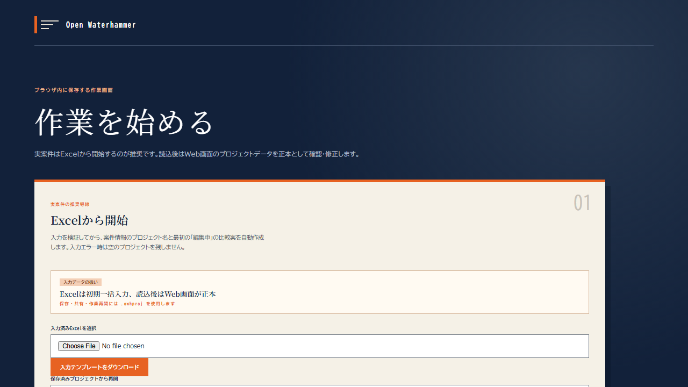

作業を始める
ブラウザの中だけで完結することを最初に示す。

計算はすべて利用者の手元のブラウザで走る。入力条件と作業状態は IndexedDB に保存され、GitHub Pages のサーバーへは送信されない。共有や作業再開には .owhproj を書き出す。
話す一言：「計算はすべて手元のブラウザの中です。施設情報がサーバーに出ません」
ブラウザの中だけで完結することを最初に示す。

計算はすべて利用者の手元のブラウザで走る。入力条件と作業状態は IndexedDB に保存され、GitHub Pages のサーバーへは送信されない。共有や作業再開には .owhproj を書き出す。
話す一言：「計算はすべて手元のブラウザの中です。施設情報がサーバーに出ません」